Spark编程基础-Python版本
第一章、基础概念
目前的主流大数据技术：Hadoop、Spark、Flink、Beam.
Hadoop

MapReduce
像写单机任务一样.
使用前提：任务必须满足可以分而治之.
YARN
Hadoop2.0出现.
统一调配资源，实现底层数据无缝共享.
Spark
全能选手.
Hadoop的缺点

有些不能转成Map和Reduce的业务无法使用Hadoop.
需要反复迭代，磁盘IO开销大.


磁盘IO，任务之间的衔接延迟高.
衔接延迟：3个Map任务全部结束才能执行REduce任务.
因此难以胜任多阶段的复杂任务.
Spark的优势
Spark本质上也属于MapReduce，但是不再局限于Map和Reduce这两个操作，还可以执行其它操作，比如groupby，filter，join等等，因此具有更强大的表达能力.

Spark可以将数据读到内存中进行操作，提升了迭代时的运行效率.
Spark使用了有向无环图的调度机制，使得相关的操作可以优化，从而很多操作可以进行流水线化处理.

对比Hadoop和Spark的读取和查询：Hadoop每次都要读写磁盘，而Spark可以直接在内存中完成，所以性能更好.
Spark和Hadoop的关系
Spark只是用来计算的，而存储仍然靠Hadoop中的HDFS。因此，Spark并不是取代Hadoop，而是取代Hadoop中的计算框架MapReduce.

Flink
与Spark是竞争关系.

Beam
一种编程接口，就可以翻译成不同(Hadoop, Spark)框架，想一统天下，但未果.
第二章、Spark的设计与运行原理

Spark的特点
运行速度快.


容易使用.
通用性.
运行模式多样.

对比Spark与Hadoop
Hadoop：

Spark：

…
Spark生态系统

需要生态系统的原因：
Spark的生态系统：


Spark的基本概念
RDD：数据可多可少，少时可以放一台机器，多了可以存放在很多台机器的内存中.
DAG：反映RDD之间的依赖关系
Executor：

Task：
Job：提交Application后，会被分解成多个作业.
Stage： 作业的基本调度单位，每个作业会被分解成多组任务，每组任务的集合就叫做Stage.
以上概念之间的关系如下：
Spark的架构设计


执行过程如下.
开始执行：
执行完毕：
or
Spark运行的基本流程
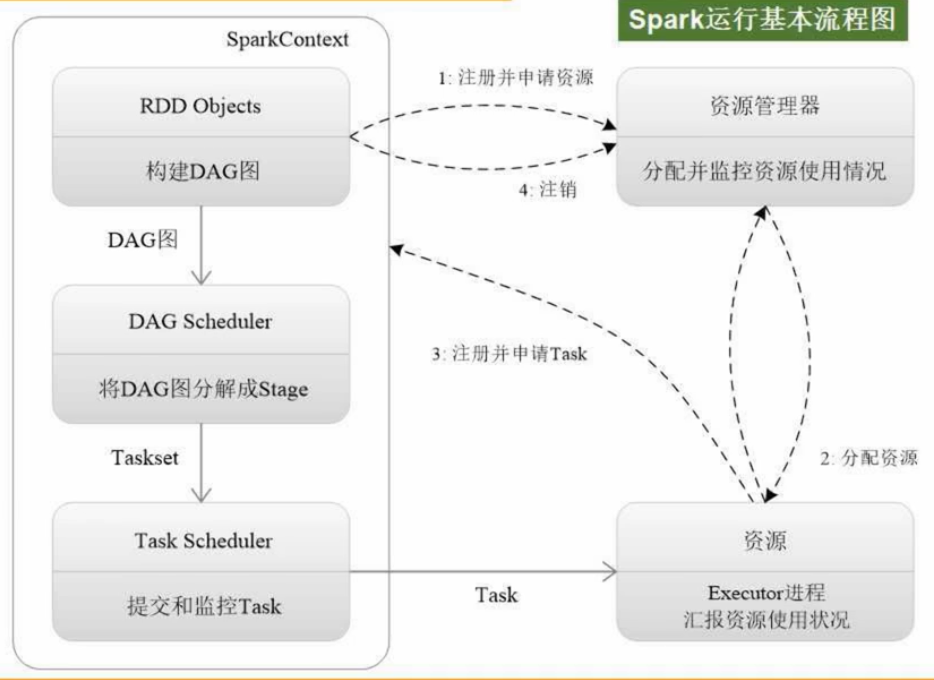
Driver节点创建一个指挥官，即SparkContext.
申请资源：
分配资源：
执行：


分发任务：
遵循”计算向数据靠拢”的原则.
执行完任务，返回结果：
RDD运行原理: 概念、操作和特性
在MapReduce中含有大量的序列化/反序列化过程，开销大
RDD的提供了抽象的数据结构，将一系列行为表达为转换处理：
不同的RDD转换之间形成依赖关系：
借助有向无环图表达依赖关系，避免了数据落磁盘，而是马上可以给另一个操作作为输入：
RDD可以存在单个机器上：
如果RDD很大，也可以分布式存储：
RDD本质上是一个只读的分区记录集合，不允许被改来改去：
如果要改，需要生成新的RDD：
比如，给每个学生加5分：
当然，加5分后得到的新的RDD也是只读的.
RDD的操作类型如下：
它们都是粗粒度的，只能对整体操作：

尽管如此受限，但Spark提供了丰富的转换操作，使得Spark几乎具有其它框架的所有操作：
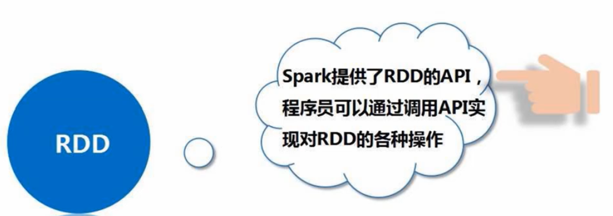
Spark的执行过程：

注意，Spark中有一个惰性机制，即：前面的各种转换操作，并不是说立即执行，而是只有在触发动作操作后才从头开始执行，有点像tf的静态图机制.

RDD具有高效运算能力的3个原因.
天然的容错性：
RDD的运行原理:RDD之间的依赖关系


是否包含Shuffle操作是区分宽依赖和窄依赖的依据.
所谓Shuffle，中文是洗牌，下面的交叉线就是一种Shuffle：
如果发生了Shuffle，就是宽依赖，否则就是窄依赖.
具体来讲，窄依赖指的是以下两种情况：
1.一个父RDD对应一个子RDD
- 多个父RDD对应一个子RDD

举几个栗子：
而宽依赖指的是”一个父RDD对应一个RDD的多个分区”：
举几个栗子：

RDD的运行原理:阶段的划分以及RDD的运行过程
因为宽依赖不能进行流水线优化，所以才把宽依赖分成不同的阶段(Stage).
宽依赖之所以不能进行流水线优化，跟Spark的优化原理有关.
RDD的一次转换，就是一次fork和join的过程：fork负责将每个分区送到不同机器上并行执行，再提供join把每台机器上的结果组合起来得到结果.
fork&join操作一般是多次的：
举个栗子：
全校学生从北京飞到厦门，一种方案如下：
这个方案中，在上海的join操作存在无意义的等待，因此可以优化如下：不在上海停
这样时间从6小时变成了5小时，优化后的方案其实就对应了窄依赖，即：可以进行流水线优化.
如果现在条件变了，要求在上海之后，改为班长带1班飞…，那么各个同学就要从以男女为单位改成以班级为单位，于是发生了数据Shuffle，而只要哦发生Shuffle就一定会写磁盘，因此就无法进行流水线优化，这就对应了宽依赖：
以上就解释了为什么宽依赖为什么需要划分成多个阶段(Stage)进行处理.
那如何划分成多个阶段呢？
即：窄依赖可单独作为一个阶段，宽依赖划分成多个不同阶段(每个阶段是窄依赖的).
一个划分的栗子：
每一个阶段内部都没有Shuffle，都是窄依赖，可以流水线化处理，而阶段与阶段之间存在Shuffle，因而存在等待.
总结一下RDD的整个运行过程：
把写的代码交给框架，框架会转成DAG图，然后分成不同阶段，向右走，向上走.
Spark的部署和应用方式
可单机也可集群.
3种集群模式：
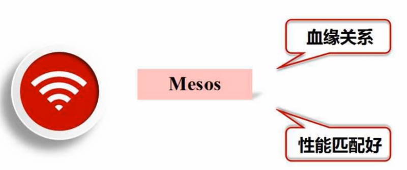
第三章、环境配置
在pyspark中运行代码


举个栗子：
启动时只写pyspark，则默认进入local[*]模式：

开发Spark独立应用程序
一个简单的栗子:
写完代码后，可以直接使用python运行：
也可以使用spark-submit提交应用程序:

一个调试小技巧：
Spark集群环境搭建
配置主节点：


配置从节点：
slave01和slave02是(从)主机的具体名称.

第一行完成Spark和Hdoop的挂接
第二行说明Hadoop相关配置信息的目录
第三行设置Spark管家节点(主节点)的ip地址(事先配置好的)
完成以上操作后：

开始启动，先启动Hadoop, 后启动Spark：
在浏览器输入访问地址即可进入：
使用完毕，关闭：
##在集群上运行Spark应用程序
- 使用Standalone集群管理器
启动&运行：
运行pyspark:
查看运行信息:
- 使用Hadoop YARN集群管理器
启动&运行:
运行pyspark:

查看运行信息：
查看整个集群的运行信息:
第四章、RDD编程

RDD编程，指的是对Spark Core进行编程.
由于Spark Core就是对RDD进行不断地转换，因此被称为RDD编程.
RDD编程基础如下：
接下来各个击破.
RDD创建
主要有以下两种RDD创建方式：
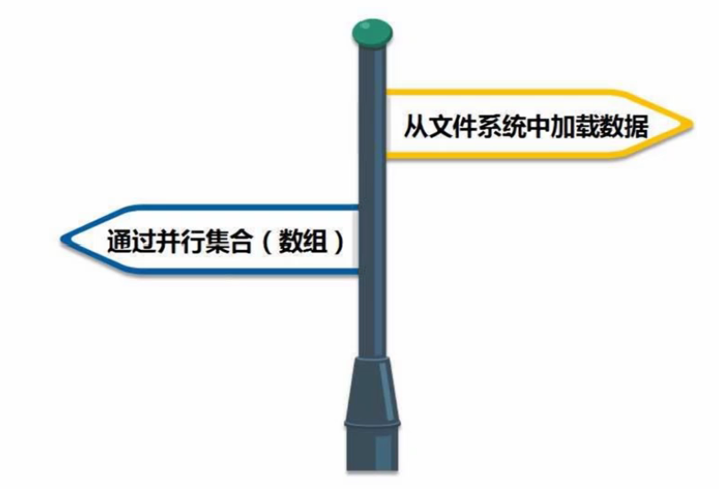
- 从本地加载数据

举个栗子：
sc是SparkContext对象，位于Master节点中.
在交互式环境中，系统已经默认创建好了一个SparkContext 对象，而单独一个py文件中，则需要自行导入.
第一行将本地的word.txt从磁盘加载进来，生成一个RDD（抽象结构）.
- 从分布式文件系统HDFS中加载数据

- 通过并行集合(数组)创建RDD


RDD操作：转换操作

所有这些转换操作构成了一张有向无环图DAG：
转化操作并不会发生真正的计算：
只有遇到动作操作时，才会发生真正的从头到尾的计算：
这被称为RDD转换操作的惰性机制.
常用的RDD转换操作如下：
- filter操作


- map操作


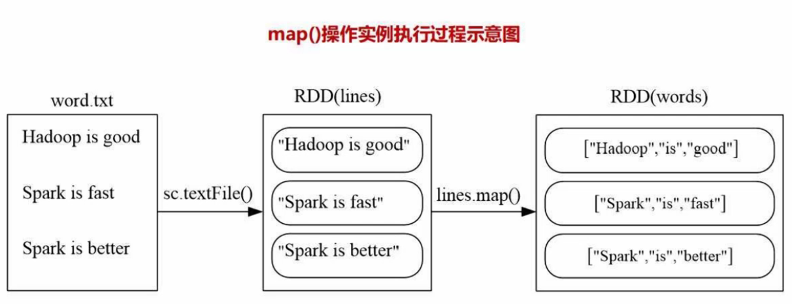
- flatMap


- groupByKey
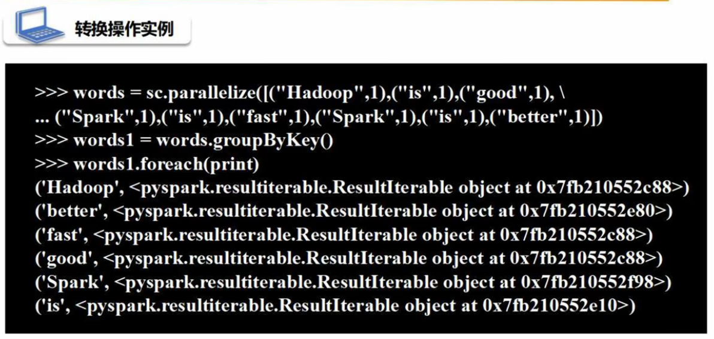
- reduceByKey
对所有key相同的键值对做聚合操作.
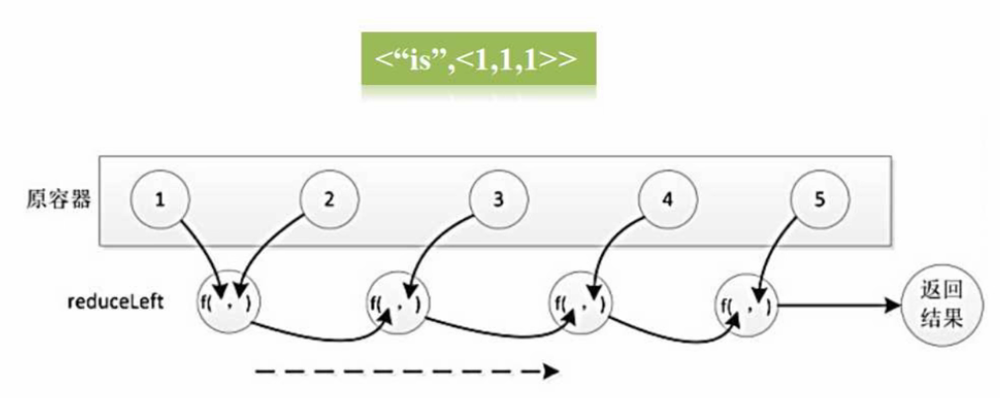
RDD操作：行动操作


其中reduce的执行过程如下：
RDD持久化
看个栗子：
由于每遇到一个行动操作，就会从头到尾执行一次，所以在运行第3行和第4行时，都分别执行了第1行的操作，造成了重复生成相同的rdd.
所以可以将rdd持久化，即缓存下来：
常用持久化方法如下：


当不再需要持久化存储时，可以手动移除：
看个栗子：
RDD分区
分区的作用：
增加并行度
减少通信开销
分区的原则：
不同模式下的分区数：


而对于Standalone和YARN模式，分区数=max(集群中所有CPU核心数目的总和, 2).
设置分区的方法:


自定义分区的方法:
举个栗子：


之所以弄成键值对(值全为1)的形式，是因为partitionBY只能操作键值对.
最后保存的路径仅仅传入了一个目录，是因为分区后会形成10个分区，每个分区一个文件，所有在传入目录下会新生成共10个文件.
写完代码，就可以运行了：

##一个综合实例：词频统计
实现代码如下：
具体解释：

以上是在单机上进行的，当数据分布在多台机器上时，需要多机并行执行.
此时需要把Hadoop和Spark同时部署在同一个集群中，具体地，将集群中的某个节点既作为HDFS的存储节点，同时也作为Saprk的工作节点.

键值对RDD的创建
键值对RDD: RDD中的每一个元素都是一个键值对.
键值对RDD的转换操作

- reduceByKey
对所有key相同的键值对做聚合操作.
- groupByKey
对具有相同key的键值对进行分组，不进行聚合计算.

对比reduceByKey和groupByKey：
- keys ,values
把Pair(键值对)RDD 中的key(value)回形成一个新的RDD.
- sortByKey

对比sortByKey和sortBy：
前者只能根据key进行排序，而后者更灵活.

- mapValues
对键值对RDD中的每个value都应用一个函数，key不会发生变化.

- join

一个综合实例


文件数据读写
本地文件的读写：
分布式文件的读写：

HBase数据读写：HBase简介

HBase是Hadoop家族的一个组件，是一个分布式数据库，是构建在HDFS基础上的，也就是说，HBase是一个分布式数据库，但它的数据被保存在了底层的HDFS中.


在关系型数据库中，给定行和列(2维)就能够定位：
而在HBase中，则需要4维才能定位：

HBase数据读写：创建HBase表
安装HBase，然后先启动Hadoop，再启动HBase：
假设要创建的student表如下：
开始创建：
关系型数据可以一列直接写入，但HBase只能一个单元格一个单元格的写：
HBase数据读写：配置Spark


HBase数据读写：编写程序读取HBase数据

count统计总共有多少个键值对（行键：行键对应的值）.


HBase数据读写：编写程序向HBase写入数据

案例1：求top值
代码：
逐行解释：
之所以弄成键值对，是因为接下来的SortByKey排序是针对于键值对进行的；repartition(1)将分区弄成1个，保证全局有序：
案例2：文件排序
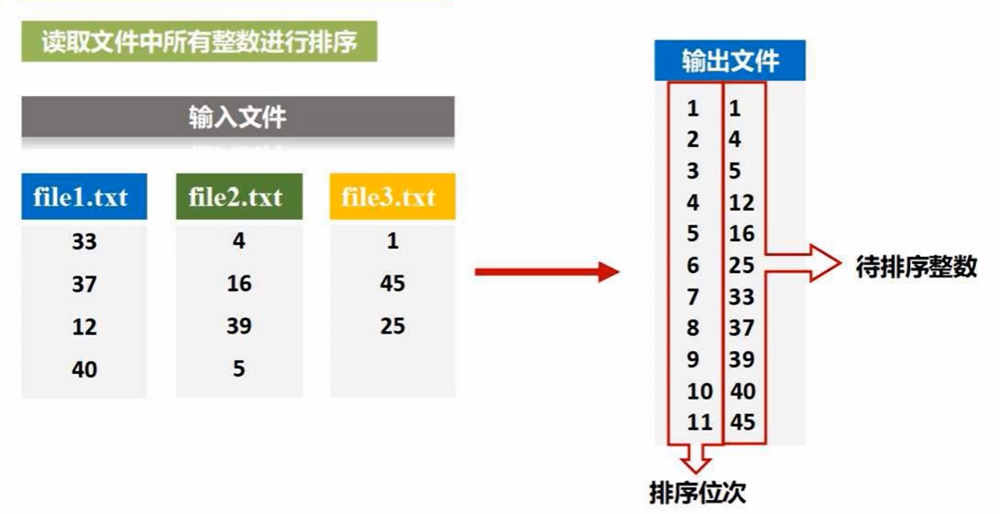
代码：
逐行解释：
案例3：二次排序
思路：用一个辅助的SecondSortKey，排好序后再丢掉它，只保留value：
具体思路如下：
代码：
逐行解释：
第五章、SparkSQL
SparkSQL简介
在Hadoop平台上的Hive本身不存储数据，而是使用底层HDFS中存储的数据，因此，Hive可以看作是一个编程接口：
在Spark平台上，直接引进了Hive，称之为Shark：
对比而言，在Hadoop中，Hive将SQL语句转换成底层的MapReduce程序，而Shark将SQL转换成底层的Spark程序。
Shark既有优点也有缺点。
优点：
缺点：
2014年6月1日，停止了对Shark的开发。
此后有了两个分支：
SparkSQL出现了。
推出SparkSQL的原因：
DataFrame概述
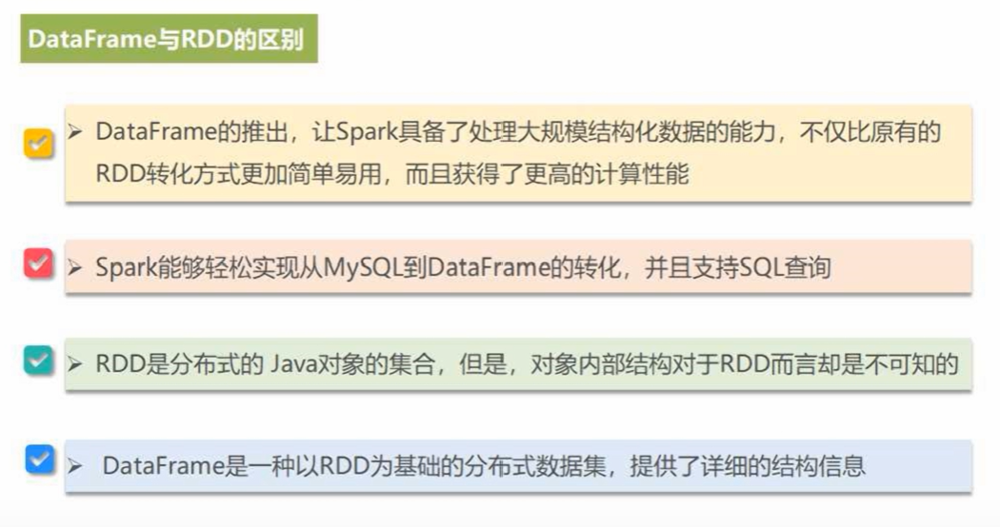
SparkCore的数据抽象是RDD，SparkSQL的数据抽象是DataFrame.
DataFrame的创建
两种创建DataFrame的写法：
实例：
读取上述json文件的代码：
DataFrame保存
DataFrame的常用操作
首先读取文件得到DataFrame，然后执行printSchema()操作来打印模式信息，用select()选取某些列：
执行常用操作：
排序：
将RDD格式数据转换成DataFrame的方法: 利用反射机制推断RDD模式
上栗子。
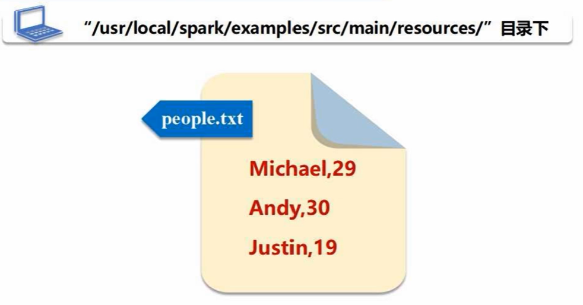
代码实现：
逐行解释：
这样得到了一个新的RDD，其中的每个元素都是Row()对象。
代码中的 .rdd将DataFrame转成RDD格式的数据。
将RDD格式数据转换成DataFrame的方法: 利用编程方式定义RDD模式
当无法提前获知数据结构时，采用编程方式定义RDD模式。
上栗子。
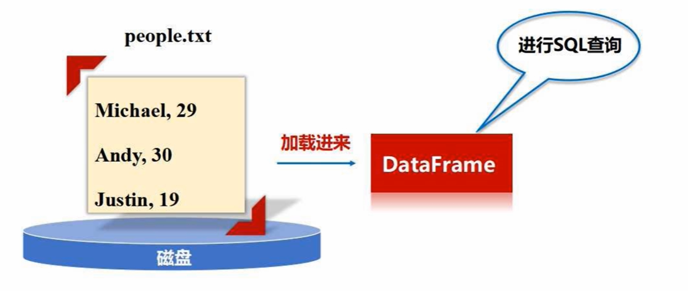
代码实现：
MySQL数据库准备工作
下载相应驱动程序，以使得SparkSQL能够读取MySQL：
将驱动程序放在jar文件夹，启动Spark.
使用SparkSQL读写MySQL数据库

第2个option中的spark指的是mysql数据库中的spark这个数据库，是一个数据库的名字；
第3个option中的student指的是要使用这个数据库下的名字为student的这张表。
上面生成了表头，接下来生成表的内容，然后将表头和表的内容结合起来，写入MySQL数据库中：
部分代码解释如下：
第六章、Spark Streaming
流计算概述
典型的数据类型可划分为两种：静态数据和流数据。
静态数据：
流数据：
比如：
流数据的特征：
流计算出现的原因：
流计算：
鉴于此，流计算框架出现了，它需要满足如下特点：
- 高性能：每秒处理几十万条数据
- 海量式：支持TB级、PB级的数据规模
- 实时性：低延迟、达到秒级、毫秒级
- 分布式：支持大数据基本架构，平滑扩展
- 易用性：快速进行开发和部署
- 可靠性：可靠地处理流数据
三类流计算框架和平台：
传统的数据处理流程：先把数据存起来，再有用户主动发起查询
流计算数据处理流程：
比如：
数据实时计算：
实时查询服务：
传统的数据处理流程中，需要应护照互动发起查询，而在流数据处理系统中，数据是主动推送给用户的
总结流处理系统和传统的数据处理系统的区别：
Spark Streaming
SparkStreaming并不是真正的流计算看框架，而是把连续的数据流切分成许多段，用快速的微小批处理来模拟流计算：
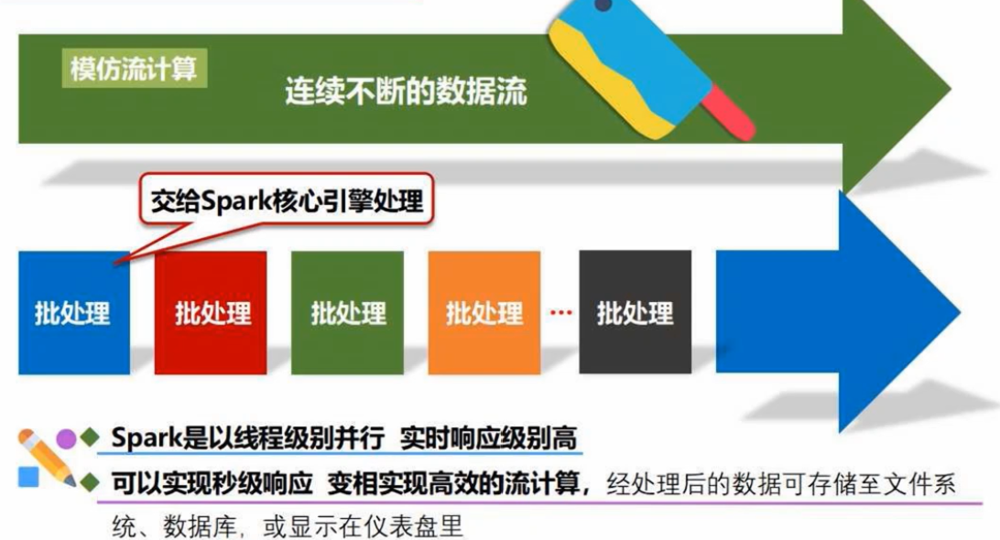
SparkStreaming的数据抽象是DStream：
之前介绍的Spark Core和Spark SQL也有相应的数据抽象：
对比SparkStreaming和真正的流计算框架Storm:
SparkStreaming容错性强，兼容批量和实时数据处理。
Spark出现之前：
Spark出现之后：
DStream操作概述
DStream本质上就是一堆RDD的集合。
SparkStreaming的工作机制：
receiver组件一直在监控有没有数据到达，这些数据的来源很多，比如套接字流，文件流，从Kafka中读取的输入流：
receiver组件将接收到的数据送给流计算框架进行处理。
编写Spark Streaming程序固有的步骤：
创建一个DStream对象：
Spark Streaming基本数据源：文件流
- 在pyspark交互窗口中创建文件流。
先创建一个文件夹：
只要文件夹下有新文件生成，就会被监控到。
开始创建文件流（统计英文词频）：
其中ssc.textFileStream()定义了一个文件流输入源。
经过lines.flatMap后得到一个RDD，RDD中包含很多元素，每个元素是一个单词。
ssc.start()启动流计算：
- 采用独立应用程序方式创建文件流
执行：
Spark Streaming基本数据源：套接字流(使用NC程序产生数据)
Socket编程：
流计算程序扮演着TCP客户端的角色。
两个参数，加一个默认的self参数，共3个参数。
现在来定义服务端，这里使用inux中的NC程序：
有了服务端和客户端，就可以启动服务了：
Spark Streaming 基本数据源：套接字流(使用Socket编程实现自定义数据)
server.accept()一直在等待客户端的连接。
启动服务端后，它就会一直监听看有没有客户端向服务端的localhost：9999发起请求。
当客户端请求到来后，服务端就会响应请求(发送相应的数据给客户端)。
Spark Streaming基本数据源：RDD队列流

每隔一秒钟就创建一个RDD，将其塞入RDD队列中，每隔两秒对数据进行处理
代码如下(统计1到1000内的数字模10的余数出现次数)：
for循环每隔一秒钟就给rddQueue塞入一个RDD，每个RDD都是1到1000的列表，分成10个分区。
Spark Streaming高级数据源：Apache Kafka
- Kafka准备工作。
关于Kafka：
也就是说，在进行不同生态的数据和Hadoop之间的数据交换时，以前需要针对Hadoop的每一个组件开发相应的接口，现在可以只面向Kafka，后续操作交给Kafka就可以了，所以说Kafka作为一个信息传递的枢纽。
Kafka的组件：
一个完整的Kafka结构：
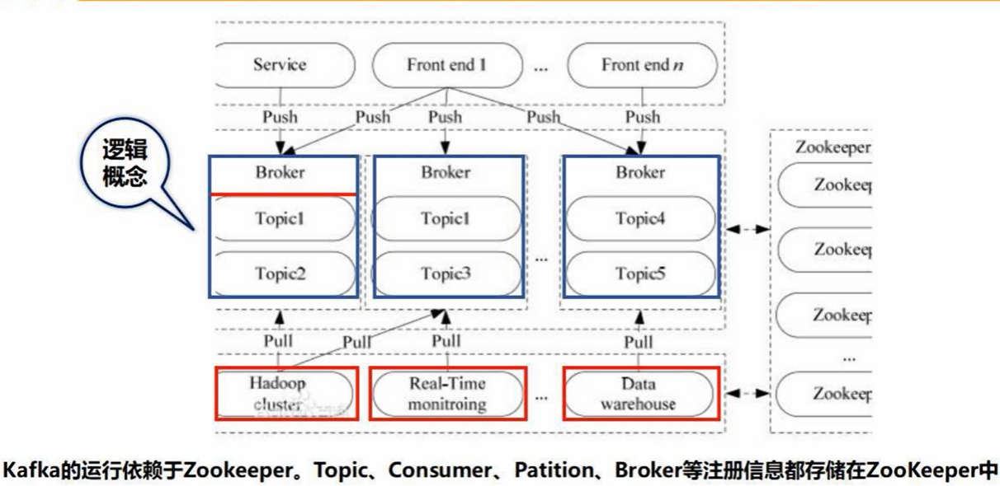
Kafka配置&启动：
在安装完Kafka后：
产生的数据被存储在名称为wordsendertest的topic中，等待消费者取走。
2.Spark准备工作。
开始编写流计算程序：
需要传入的参数有zookeeper的地址zkQuorum以及主题的名称topic.
kvs是建立的Kafka数据源，里面是键值对，只取值，这里的值是一个一个的句子，存入lines.
开始执行：
DStream的转换操作：无状态转换操作

countByValue：
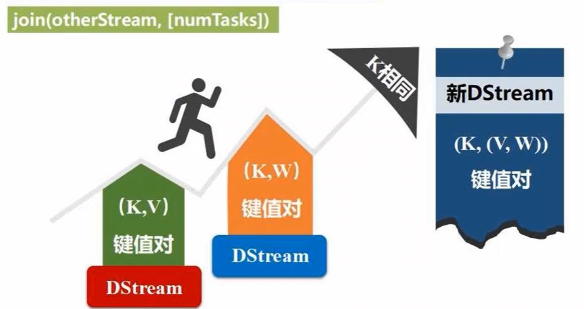
DStream的转换操作：有状态转换操作
滑动窗口转换操作
30是滑动窗口长度，10是滑动时间间隔，即每个10秒滑动一次。
离开窗口的(蓝色)，用x-y函数给移出去，新加入窗口的(橘色)，用x+y函数给加进来，仍留在窗口内的保持不变，这样就极大的减少了计算量。
启动：
updateStateByKey
输出操作
把DStream输入到文本文件中：
把DStream写入到MySQL数据库中 ：
以下是完整的代码文件：
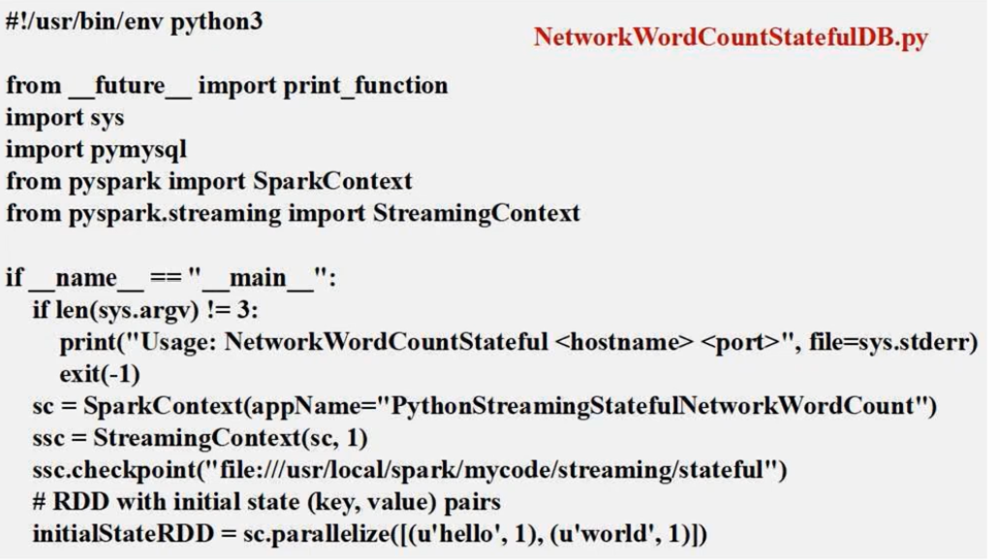
在func中，将分区设置为3，避免打开过多的数据库链接，因为原本可能有许多分区；接着使用dbfunc对个分区中的每一个键值对(单词，词频)进行处理并保存（每个分区包含多个这样的键值对）。
在dbfunc中，输入的是一个分区中的所有键值对，然后利用doinsert将每一个键值对插入到数据库中。